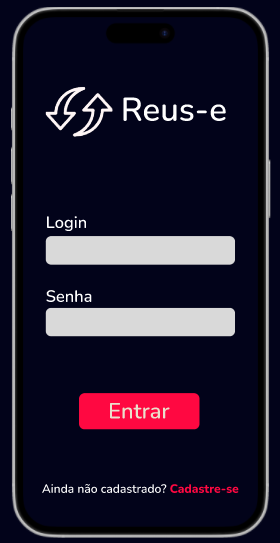

Transforme Eletrônicos Usados em Novas Oportunidades


O Reus-e é uma plataforma inovadora que busca promover a sustentabilidade e a economia circular, incentivando o reaproveitamento de dispositivos eletrônicos usados. Por meio dela, usuários podem vender, doar ou trocar equipamentos eletrônicos que já não utilizam, oferecendo uma alternativa prática e consciente ao descarte inadequado.